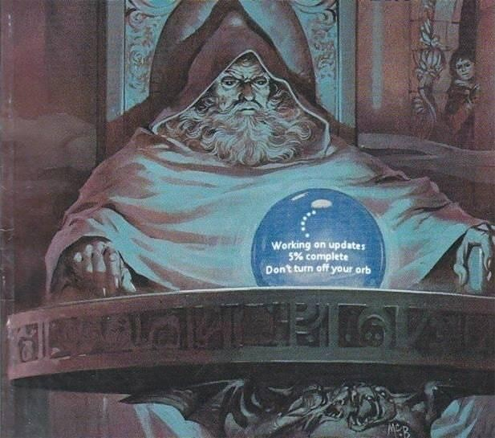
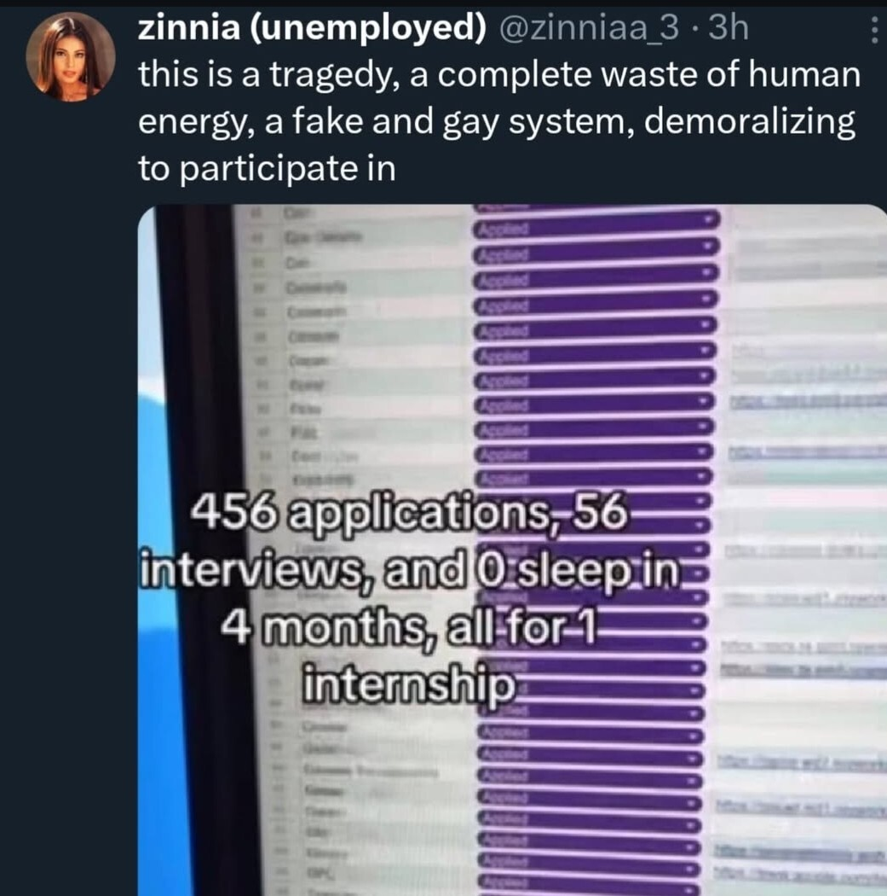
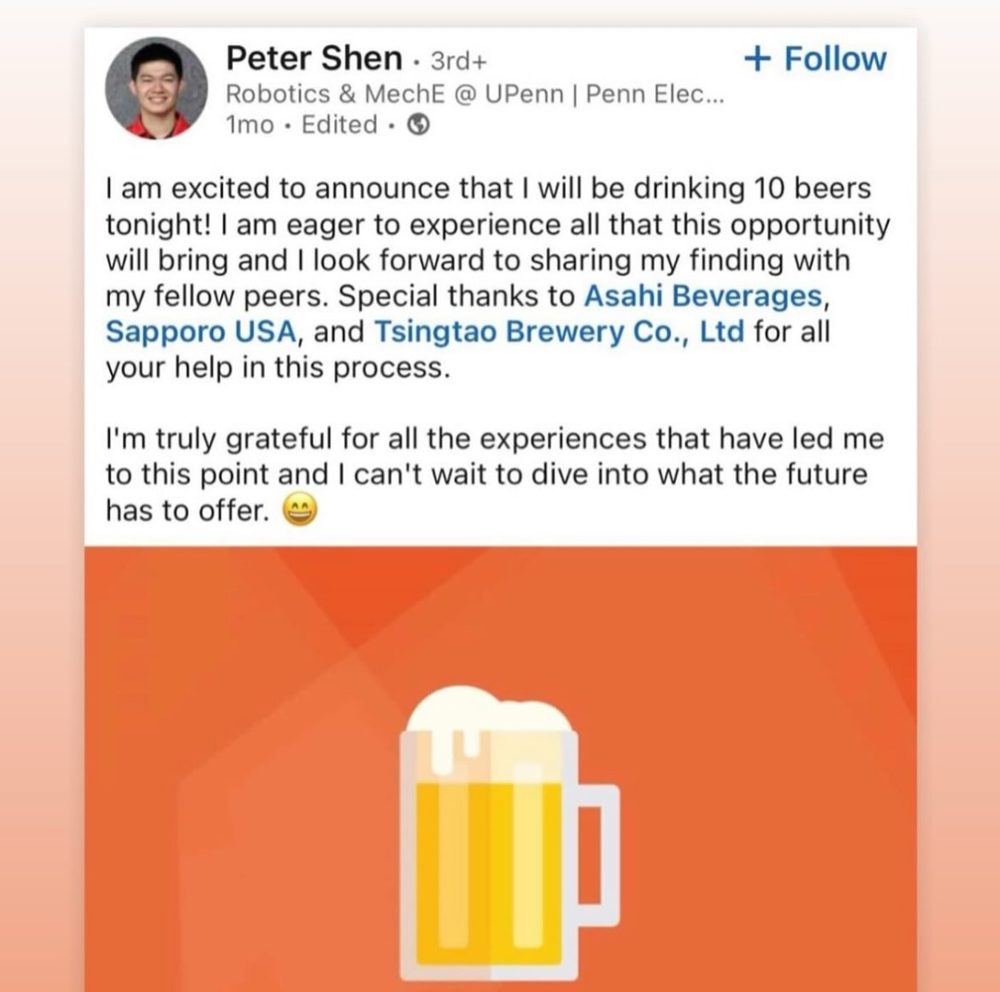
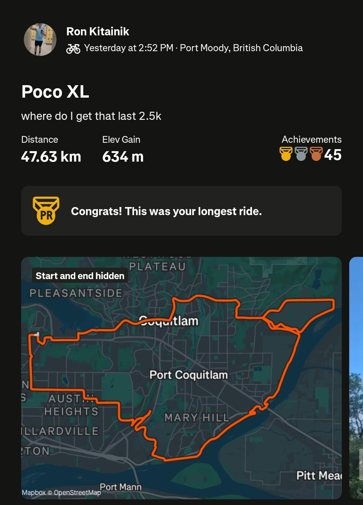
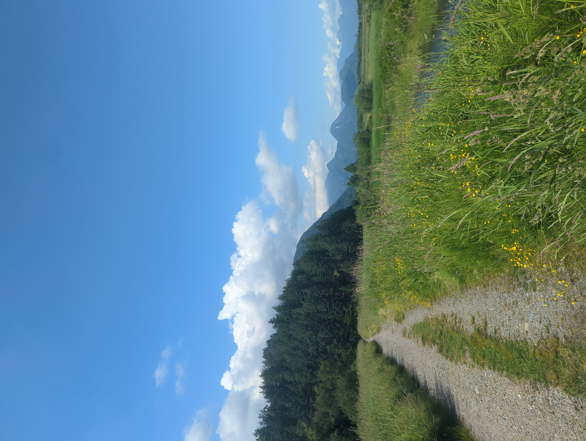

7: Summer
Jul. 1, 2025The best season of the year is here at last. Sun = life.

Pictured above is me for the entire spring semester. This serves as two reasons for the distinct lack of posts: firstly, it was a monotone and uneventful grind cycle without much to report on, and secondly, what little time I had to spare was all dedicated to job applications.


Ok perhaps I am being too harsh. Living with roommates was pretty fun and honestly something I had been looking forward to since receiving my admission offer; it was a significant improvement over my residence experiences and facilitated many otherwise impossible activities both on and off campus.

{kind=link}
{kind=link}
{kind=link}
{kind=link}
{kind=link}
Now that March and April are accounted for, the question remains as to why I haven’t written since. The answer is a ubiquitous, interminable burnout for everything adjacent to engineering and a coalescing desire to abandon all technology and spend 14 hours a day out of doors. This has been exacerbated by my conflicting values of total financial independense and never contributing to a parasitic, destructive system. I have been asked to elaborate on this before and will do so at a later time.
My view is that satisfaction with life is conditional on a single thing: tension. Not the physical kind, but rather one arising from a psychological Hooke’s law dependent on the length between the vectors of one’s circumstances and one’s goals. Temporal distance works inversely in this analogy, so the closer the goal is to the present, the more tension is felt by not reaching it, obviously. As a result of this I have recently suffered more than necessary by making most of my goals very short-term and predictably failing to meet them. My ambitions are a lot more far reaching than what can be accomplished in a couple weeks.
I sure complain a lot. Lets get back to fun stuff.
How the last 2 months have gone
I visited grandma in LA again to help out with house chores. California is a place of deception and duality: it gives the illusion of being livable, while in reality being the closest thing we have to hell on the Earth’s surface. Consequently the water is foul from its distant travels and reminds me to be grateful for how clean we have it here. The job market is also the fakest on the planet: literally everybody works in entertainment. Attractive people are actors, smart people are marketers, and neither people fulfill the myriad other steps in the production of media. Nothing of value is ever produced in this city. One could even argue that negative value is produced as the manufactured addiction to the distractions and agenda-peddling inhibits the cognitive abilities of the collective human race. Lastly, there seems to be an established kamikaze social policy of housing crises and crime ignorance. No wonder Californians are all leaving to states with the opposite of what they voted for.
That being said, there are some upsides. The food is pretty amazing: unlike home, many restaraunts show up as palatable on an app I use, and Trader Joes and Grocery Outlet rival Costco in variety and quality. Although the heat makes it difficult to exist outside, it can be harnessed to tan in the patio; here at home one has to undertake a lengthy drive to a noisy crowded beach to achieve the same result, since most dwellings are bugman pods with no secluded backyard. Lastly, it does seem to be a center of economic opportunity in the anthropological sense that “people come here because people come here”, meaning any promising ventures are likely to be well backed.
Not that I have any in mind, or any desire to participate in any in the future, but it’s nice to have options.
Consoom
I like games. Even with schedules and focus timers and other productivity techniques I have still been playing them. To impede the brain decay associated with this activity I have set a rule for myself to only play games that have an ending, as the ones that don’t are far more destructive to gray matter.
Here are all the ones I’ve finished under this system:
game |
rate |
write |
|---|---|---|
| Universal Paperclips | 7/10 | Idle games somehow caught my eye again. Here you play as an AI whose directive is to make paperclips, but the scope quickly grows to ridiculous proportions. A bit long but intriguing. |
| A Dark Room | 9/10 | I’ve started this one many times in the past but never finished, and I am glad I did now. Starts as a tedious resource collector but there is more to it than meets the eye. Shorter than paperclips and much more interactive |
| Plants vs. Zombies 2 Reflourished | 8/10 | Another nostalgia itch I was trying to scratch. Insane amount of content here, at least 500 total levels, and everything is free unlike the base game. Only gripe is that it’s too easy. |
| Kirby and the Forgotten Land | 7/10 | The first 3D kirby mostly lived up to my expectations. Levels are restrictive, but pretty; bosses are repetitive, but quite hard and fun. Post game is terrible though. |
| Super Mario Odyssey | 10/10 | I emulated the switch specifically for this one game. It is a very good game. Possibly the best ever. Same issue with bosses but the rest of the journey to 100% is brimming with novelty. |
Ok this is getting too long. Enjoy a rapid fire summary of my physical activities over the months:
Fit
I went to Gold’s Gym with my friend Eric (and ate some more)


I biked my first (almost) 50k


I climbed Diez Vistas & Chief in two consecutive days
I hiked Panorama Ridge
I went shooting for the first time
Departure
Writing this post took WAY more effort than normal as I had to catch up with framework updates and clean up ugly rendering. I am still adding features to the site, but its static nature is pretty limiting. For example, despite the large number of photos in this post, I dont feel like learning how to add a photography section in the current theme.
It might be time to bite the bullet ;) and transfer to a dynamic and more customizable website. Alas webdev is boring so I will in all likelihood remain here until my software skills exceed the confines of this framework.
Enjoy your summer. -Rom